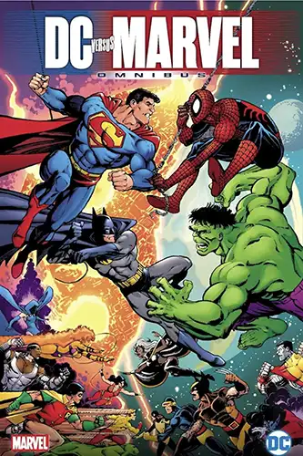
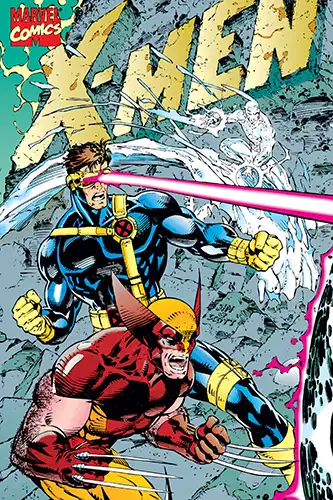
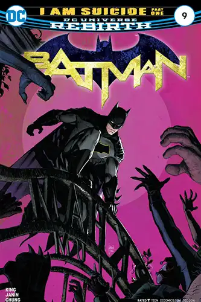
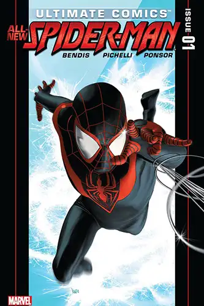
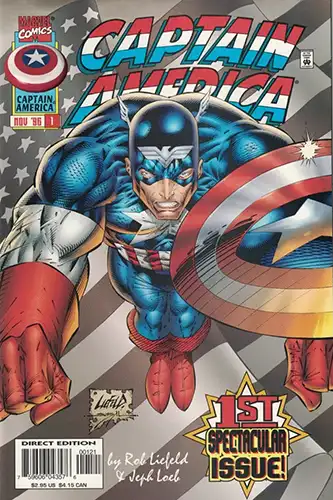

Marcos Cuevas-Ibarra
Marvel & DC Comic Portfolio
Marvel Vs DC
The DC Universe is a little bit different from the Marvel Universe, though the terminology of their names may be similar. Even more than Marvel, DC embraces the idea of having multiple versions of heroes such as Batman and the Flash, whose adventures are not always directly connected.
X-Men
X-Men is an American superhero film series based on the Marvel Comics superhero team of the same name. 20th Century Fox obtained the film rights to the team and other related characters in 1994 for $2.6 million.
Batman
Batman is a superhero appearing in American comic books published by DC Comics. The character was created by artist Bob Kane and writer Bill Finger, and debuted in the 27th issue of the comic book Detective Comics on March 30, 1939.
Spiderman
Spider-Man is a superhero appearing in American comic books published by Marvel Comics. Created by writer-editor Stan Lee and artist Steve Ditko, he first appeared in the anthology comic book Amazing Fantasy #15 in the Silver Age of Comic Books.
Captain America
Captain America is a superhero created by Joe Simon and Jack Kirby who appears in American comic books published by Marvel Comics. The character first appeared in Captain America Comics #1, published on December 20, 1940, by Timely Comics, a corporate predecessor to Marvel.
Social Media